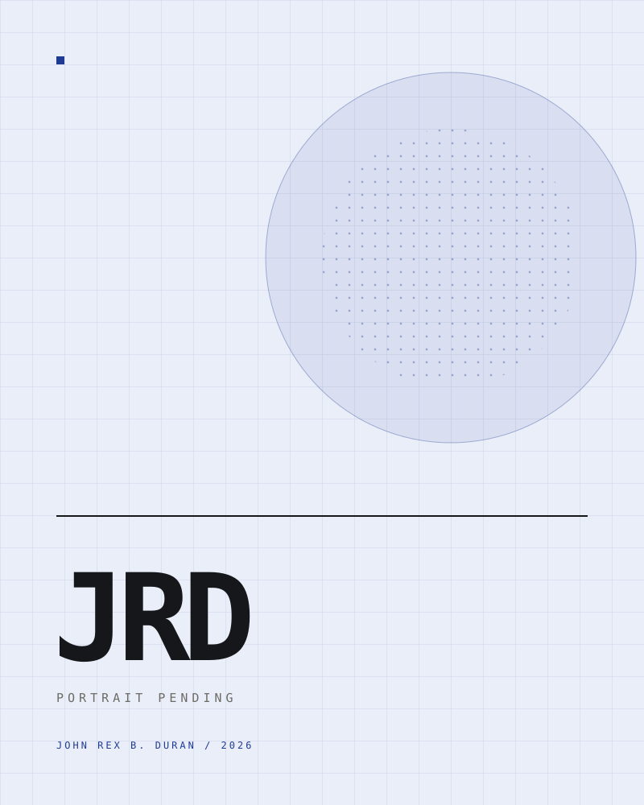

Academic e-portfolio, S.Y. 2026–2027
John RexB. Duran
Pre-service teacher, BTVTED Computer Programming
Twenty-one documents from my field study at President Diosdado Macapagal High School, mapped to the thirteen practicum indicators.

Submission
Submitted by
John Rex B. Duran
BTVTED, Major in Computer Programming
Technological University of the Philippines, Taguig
johnrex.duran@tup.edu.ph
Date: ____________________
Submitted to
Ferdinand S. Baltazar
Cooperating Teacher
President Diosdado Macapagal High School
Notes
Practice teaching, first trimester, S.Y. 2026–2027. Copy and documents are placeholders until final submission. The cooperating teacher's evaluation is submitted separately in a sealed envelope.